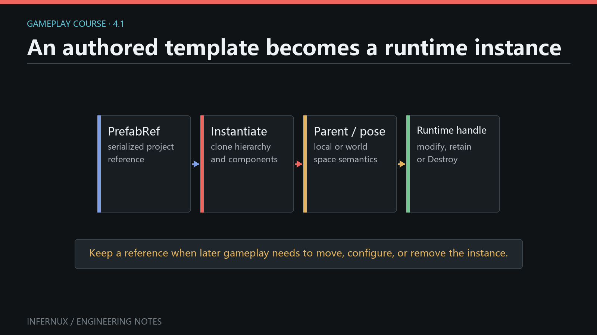

Gameplay · Chapter 4
Prefabs and runtime object lifetime
A Prefab stores an authored GameObject hierarchy as an asset. Instantiate turns that asset, or an existing scene GameObject, into a new live hierarchy. Destroy ends the lifetime of a live GameObject. This chapter builds a small spawner and makes the parent-space rules explicit.

Author a Prefab asset
Prerequisites. Continue from Chapter 3 with a saved scene and the Hierarchy, Project, Inspector, Game, and Console panels visible. The scene needs an enabled Camera that can see the origin.
- In Project, open the
Assetsfolder where the Prefab should be stored. - In Hierarchy, create a Cube and rename it
SpawnedCube. Set its local position to(0, 0, 0)and choose a visible scale and material. - Add any child objects that should be cloned with it.
Instantiatecopies the complete hierarchy and its components. - Right-click
SpawnedCubein Hierarchy and choose Save as Prefab. The editor creates a.prefabasset in the current Project folder and links the source hierarchy to it. - Confirm that the Prefab appears in Project, then delete the source
SpawnedCubefrom the scene. The asset remains available for runtime creation. - Create an Empty GameObject in Hierarchy, rename it
SpawnRoot, and set its position to(0, 0, 0).
PrefabRef stores a Prefab GUID and path hint. It does not identify a live scene object, and its current resolve() result is always None. Call Instantiate or PrefabRef.instantiate() to create a live GameObject.
Build a runtime spawner
- In Project, right-click the target folder and choose Create > Script (.py). Name it
PrefabSpawner. - Replace the generated script with the complete component below.
- Return to the editor, select
SpawnRoot, click Add Component, and addPrefabSpawner. - Drag the
.prefabasset from Project onto the component's Prefab field in Inspector. A Project asset dropped on thisGAME_OBJECTfield becomes aPrefabRef. - Save the scene.
from Infernux import (
Debug,
Destroy,
FieldType,
InxComponent,
Instantiate,
PrefabRef,
Vector3,
serialized_field,
)
from Infernux.input import Input, KeyCode
class PrefabSpawner(InxComponent):
prefab: PrefabRef = serialized_field(
default=PrefabRef(),
field_type=FieldType.GAME_OBJECT,
tooltip="Prefab created when Space is pressed",
)
def start(self):
self._last_instance = None
def update(self, delta_time: float):
if Input.get_key_down(KeyCode.SPACE):
self.spawn()
if Input.get_key_down(KeyCode.DELETE):
self.destroy_last()
def spawn(self):
if not self.prefab:
Debug.log_warning("PrefabSpawner needs a Prefab asset")
return
instance = Instantiate(self.prefab, parent=self.game_object)
if instance is None:
Debug.log_error("Prefab instantiation failed")
return
instance.transform.local_position = Vector3(0.0, 0.0, 2.0)
self._last_instance = instance
Debug.log(f"Spawned {instance.name}")
def destroy_last(self):
if self._last_instance is None:
return
Destroy(self._last_instance)
self._last_instance = None
Debug.log("Destroyed the last spawned instance")
Enter Play mode and click the Game panel. Each Space press creates a fresh Prefab instance under SpawnRoot. Delete removes the most recently created instance. Earlier instances remain because the component stores only the latest returned GameObject.
What Instantiate accepts and returns
The public Instantiate(original, *args, **kwargs) dispatcher currently supports these sources:
- A
GameObject, producing a deep copy of its hierarchy and components. - A
GameObjectRef, after resolving its live scene object. - A
PrefabRef, by loading the referenced.prefabasset. - A Python
Materialor nativeInxMaterial, producing a material clone. Parent and Transform overloads do not apply to materials.
For GameObject and Prefab sources, the scalar overload returns the new root GameObject, or None when no instance can be created. Check that result before accessing name, transform, or components.
Instantiate also restores Python components on the copied hierarchy. Each instance receives its own component objects and runtime state; the source hierarchy stays unchanged.
Choose parent and Transform space
The current scalar overloads provide three useful placement patterns:
from Infernux import Instantiate, Vector3, quatf
# No parent argument: create at the scene root and preserve source world TRS.
root_instance = Instantiate(prefab)
# A parent argument: preserve source local TRS under this parent.
local_instance = Instantiate(prefab, parent=spawn_root)
# Parent plus True: keep source world TRS while adopting the parent.
world_instance = Instantiate(prefab, spawn_root, True)
# Position and rotation are world-space values; the parent is optional.
placed_instance = Instantiate(
prefab,
Vector3(5.0, 0.0, 2.0),
quatf(),
spawn_root,
)
parent may be a GameObject, Transform, GameObjectRef, or None. The explicit boolean is named instantiate_in_world_space when passed by keyword.
| Call shape | Parent result | Transform result |
|---|---|---|
Instantiate(source) |
Scene root | Preserve source world transform |
Instantiate(source, parent=target) |
Child of target |
Preserve source local transform |
Instantiate(source, target, True) |
Child of target |
Preserve source world transform |
Instantiate(source, position, rotation, target) |
Child of target |
Apply the supplied world position and rotation |
This distinction becomes visible when the source or target parent is translated, rotated, or scaled. The tutorial intentionally uses parent=self.game_object, then assigns local_position, so every spawned Cube appears two local Z units from SpawnRoot.
An explicit parent=None uses the parent-overload path and preserves local TRS. Omitting the parent argument preserves world TRS. They can produce different positions when cloning a scene GameObject that already has a parent.
After creation, hierarchy changes use matching APIs:
# GameObject API: parent is a GameObject.
instance.set_parent(spawn_root, world_position_stays=True)
# Transform API: parent is a Transform.
instance.transform.set_parent(
spawn_root.transform,
world_position_stays=False,
)
world_position_stays=True keeps the current world transform while calculating new local values. False keeps the current local values and lets the new parent determine the resulting world transform.
End an instance lifetime with Destroy
The top-level Destroy function currently accepts a live GameObject only:
Destroy(instance)
Destruction enters the scene's pending-destroy flow. Treat the object and all descendants as unavailable after requesting destruction, clear references you own, and let lifecycle cleanup run. Active Python components receive their disable and destroy cleanup as the pending operation is processed.
The delay parameter exists in the current signature, but delayed destruction has not been implemented. Destroy(instance, 3.0) does not schedule a three-second lifetime. For timed cleanup, track elapsed time in a component or use the coroutine timing APIs introduced later in the course.
Destroy(component) raises TypeError. A Python component can remove itself with its destroy() method; that is a separate component-lifetime operation.
Common errors
Space creates nothing. Click the Game panel, confirm that the Prefab field is assigned, and inspect the Console. Instantiate returns None when the Prefab asset cannot be found or no live source can be resolved.
The field contains a scene object. A GAME_OBJECT Inspector field accepts both Hierarchy objects and Project Prefabs. Drag the .prefab asset from Project when the script should store a PrefabRef.
Calling prefab.resolve() gives None. That is the current PrefabRef contract. Use Instantiate(prefab) to create a scene object.
The instance jumps after parenting. Select the intended rule explicitly: preserve local TRS with parent=target, or preserve world TRS with target, True. Follow-up set_parent() calls use world_position_stays for the same choice.
A destroyed reference is used again. Set owned references to None immediately after Destroy, as the spawner does. Store every returned instance in a list when the design needs to manage more than the latest one.
Delayed destruction does not wait. The current delay argument is reserved. Implement the timer in gameplay code before calling Destroy(instance).
Verify the result
The chapter passes when all of these checks succeed:
SpawnRootshows an assigned Prefab asset in the Inspector before Play mode.- Each Space press adds one independent
SpawnedCubehierarchy belowSpawnRootduring Play mode. - Every new root has local position
(0, 0, 2), so moving or rotatingSpawnRootchanges where its children appear. - Delete removes the latest spawned hierarchy and writes one cleanup line to Console.
- Leaving Play mode removes all runtime-created instances and restores the authored scene.
You can now turn authored hierarchies into controlled runtime objects and choose their coordinate-space behavior deliberately. Chapter 5: Physics and collision callbacks adds colliders, rigid bodies, fixed-step motion, and contact events to these instances.